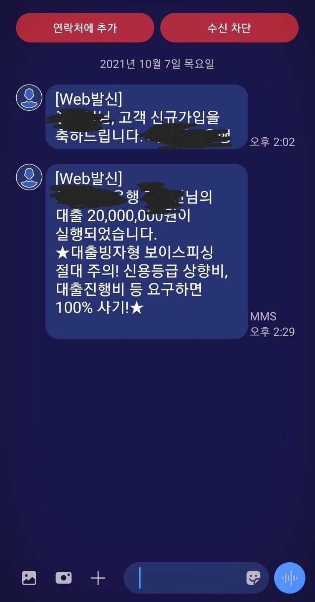

[개인회생자대출] 최규열 이사님과의 대출 후기(면책자)
재직형태 : 직장인
재직기간 : 1년 2개월
사대보험 가입유무 : 유
소득 : 연 4500만원 정도
신용등급 : 나이스 679
채무내역 : 대부업 3건 / 3950만원
필요서류 : 신분증, 초본, 통장사본, 건강보험 득실확인서 / 납부확인서
8월에 납부 완료하고 바로 면책신청하고, 8월말쯤 면책 결정나도 9월 중순쯤 신정원에 내용 도달 되었어요.
개회 하면서 대부업 3건이 있었고 1500, 1300, 1200 해서 총 4000이나 됐네요;;;ㅠㅠ
면책하고 대부업이고 금액도 커서 점수 많이 안오르더라구요.
저축은행권으로 대환해보고자 최규열 이사님 통해서 시도했습니다.
대부업 3건을 저축은행 1건으로 해서 모두 대환하고 싶었는데, 일단 오늘 결과는 한도 2000 까지밖에 안나와서..
1500짜리 젤 큰거 한건만 대환했어요.
내일 또 한번 더 시도해봐서 나머지도 다 대환해보려고 합니다.
그래도 일단 1건이라도 24%에서 16%로 줄였네요.
내일 제발 다른 저축권에서 한도 나와서 모두 돌리고 싶네요~
그래도 오늘 이렇게 하나라도 줄이게 도와주셔서 감사합니다.
